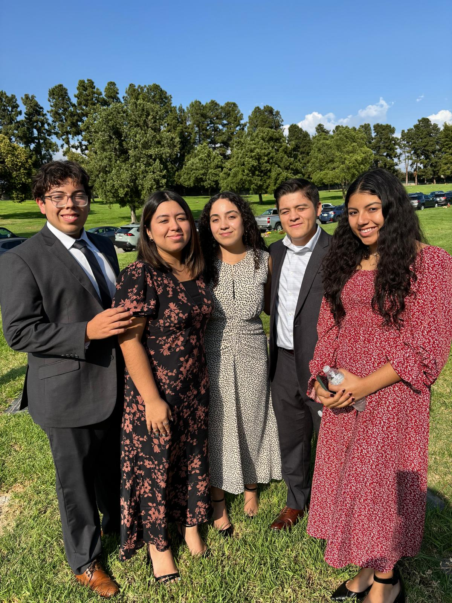

> David Hernandez
I am a computer science major with interest in
Artificial Inteligence, Machine Learning, and Data Science.
My goal is to learn, if I dont have the solution I will find it.
> booting david.exe
Initializing profile...
> david.location
"Los Angeles, CA"
> david.contact
["davidhndz@icloud.com", "GitHub", "LinkedIn"]
> david.resume
"resume.pdf"
> david.interests
["cooking", "baking", "soccer", "skating", "traveling"]
> david.education
"B.S Computer Science - California State University Los Angeles"
> david.languages
["python", "c/c++", "java"]
Me
Hello there, its great to see you.
I’m someone who enjoys building things whether that’s technology, community, or a really good meal in the kitchen. My background in construction and tech has shaped how I think: I like solving real problems and creating tools that make life a little more efficient and a little more fair. I’m especially interested in how AI and data can improve industries that don’t always get the spotlight.

Outside of work and school, I’m happiest staying active and exploring. I enjoy cooking, traveling to new places, skating when I need to clear my head, and playing soccer whenever I get the chance. I appreciate experiences that challenge me and push me to grow.

At the core, I value family, commitment, and curiosity. I believe progress happens when people support each other, share what they know, and aren’t afraid to try something new. I’m always looking to learn, build, and contribute wherever I can.

Experience
Software Engineer Intern
Designed and implemented Grafana dashboards to monitor service health and business metrics, performing root cause analysis and profiling Python-based services to improve performance. Automated manual reporting pipelines using AWS Lambda and Python, reducing repetitive tasks and improving operational efficiency.
Collaborated directly with senior engineers and company leadership to author Software Design Specifications (SDS) and Software Requirements Specifications (SRS), translating strategic goals into actionable engineering tasks within the SDLC. Participated in Slack-based on-call support, responding to production issues in real time and maintaining technical documentation.
 Special Education Paraprofessional
Special Education Paraprofessional
Projects
FlappyBird DQN
Sudoku-Solver
BookStore Inventory App
Contact Me
davidhndz@icloud.com | GitHub | LinkedIn